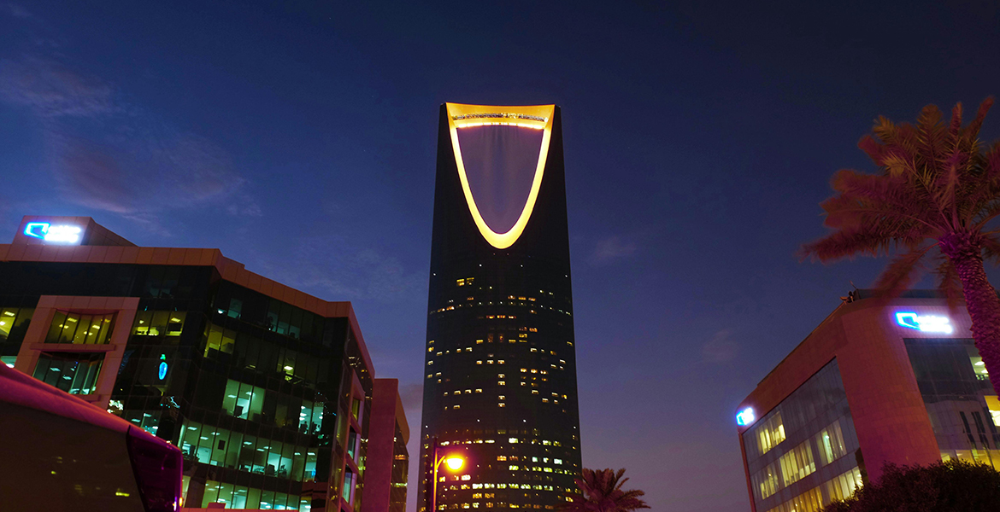
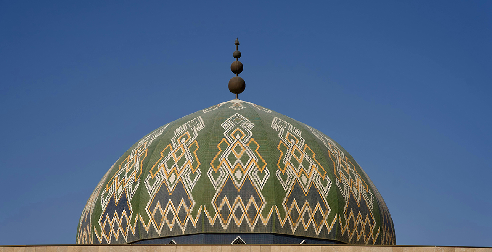
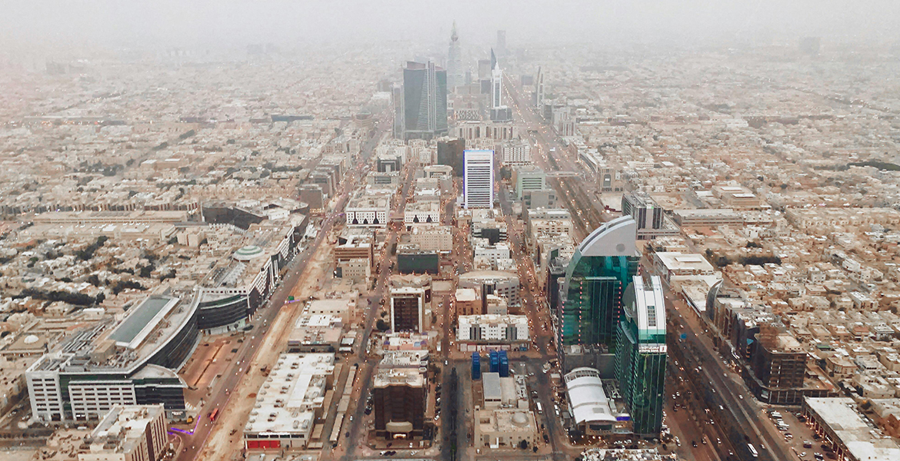
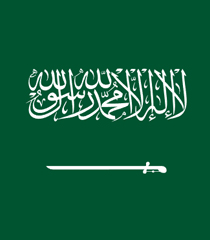
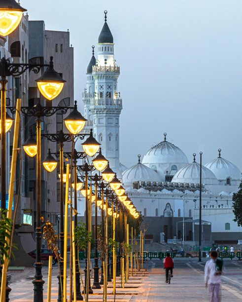

Riyadh
7.953.000 Resident
Saudi Arabia
38’24° LU 43’46° BT




Get More Information

Riyadh
View all citiesSaudi Arabia, officially the Kingdom of Saudi Arabia, is an Arab country in Western Asia, encompassing almost the entire Arabian Peninsula. With an area of approximately 2,150,000 km², Saudi Arabia is geographically the fifth-largest country in Asia and the second-largest in the Arab world, after Algeria.
Images Credit
Bandung
Asia Africa
City Network
Quick Link
Get in touch
Need Information?
+62 81318667479
bapperida@bandung.go.id
© BAACN - All rights reserved